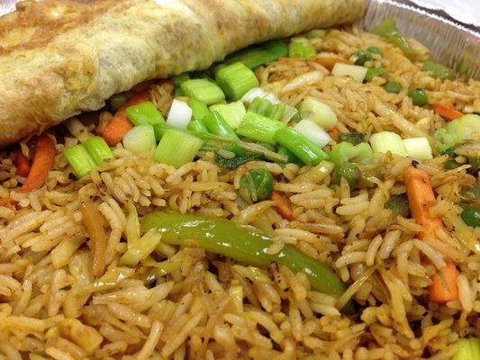
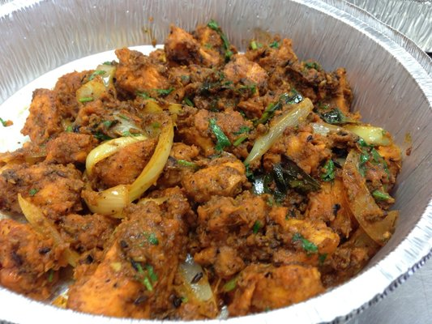

Mumbai-style Indian and Chinese fusion dishes. Everything is made to order from scratch and can take some time to prepare. Call ahead and carry out to minimize your wait time.
The chicken lollipop is an hors d'œuvre that is made from the middle (and sometimes inner) segments of chicken wings. The middle segment has one of the two bones removed, and the flesh on the segments is pushed to one end of the bone. These are then coated in a spicy red batter and deep fried. It is a popular item in Indian Chinese cuisine, served with Szechuan sauce.
Location

1005 E. Braker Ln
Austin, TX 78753
Inside the Braker Lane Food Mart.
Food trailer at 7th Street and 35 for lunch on weekdays and late night on weekends.
Call for more information about catering.